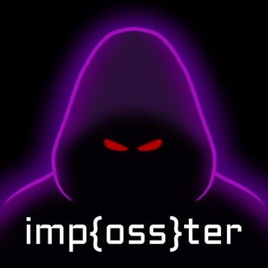
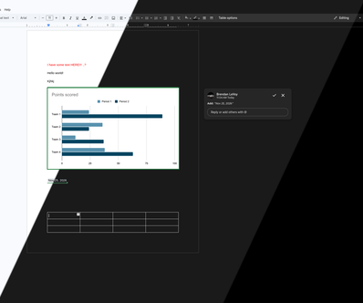
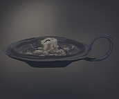
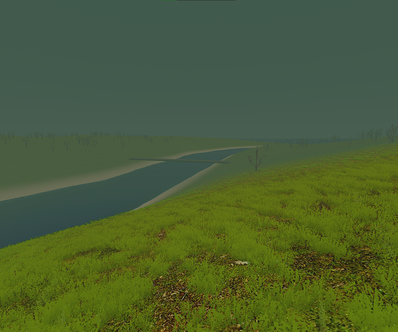

Portfolio
My awesome portfolio showcasing my favorite projects.

imp{oss}ter
OSS implementation of the popular party game "Imposter" (sometimes referred to as "Chameleon")

DocsInDark
Turn Google Docs and Sheets dark. A continuation and expansion of the "DocsAfterDark" project.

LUCKY CANDLE
Become the best psychic in the world!

Godot 4 Resources
Handful of shaders, scripts, and other assets for the Godot Engine.
Devblogs and Guides:
Now without monospaced fonts on the blogs, and hovering panels! Fancy.
Educational Posts
A curated list of all the posts I made that teach you something, provide code/math, and don't just yap about stuff I did or made.
Resources:
Contact Info:
Name: Brendan LeVoy